Battle system
If you want to create to create a RPG, you may need a battle system. Here, we will see all the features linked to the battle implementation.

Note: if you want to do an action RPG (battles directly on maps), you can do it through object & events
Battle system datas
A lot of battle system datas can be found in Systems Manager > Battle System.
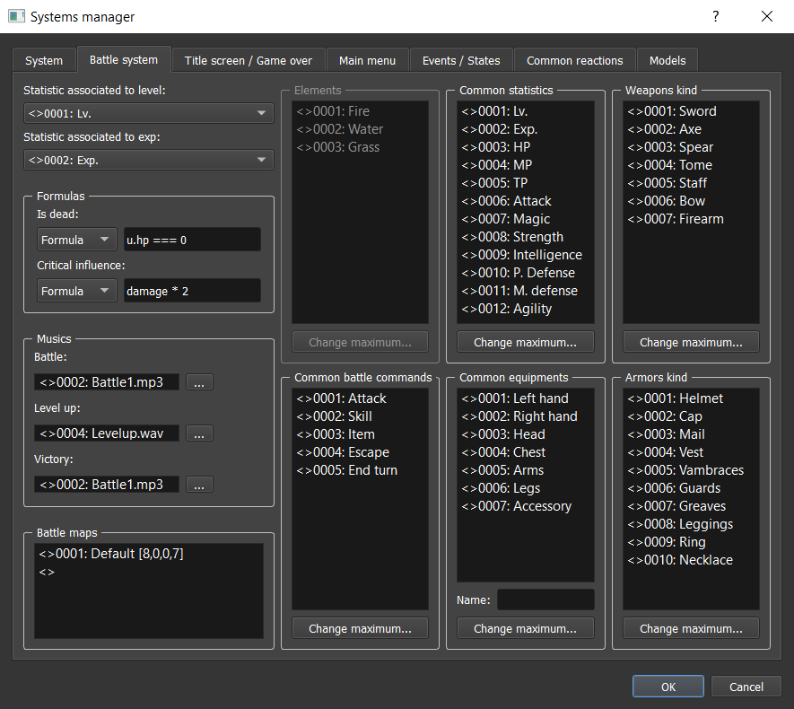
Elements
Not available yet.
Common statistics
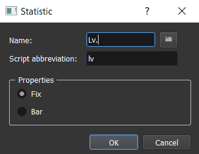
You can manage here all the statistics that you want to have in your game for influencing your battles (HPs, lvl, strength, etc.).
Name: Name displayed in game UI.Script abbreviation: Choose here an abbreviation. This will be used for game scripts, choose something without capital letter if possible.- Properties:
Fix: If checked, this statistic would be a fix value (not a bar).Bar: If checked, this statistic would be a bar value (an actual value + max value).
Common battle commands
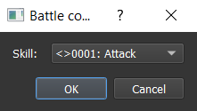
Choose which battle commands you want to have after selecting a hero to do something.
Skill: Choose the corresponding skill.
Render in game:
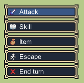
Common equipment
Choose the name of common equipment so you will be able to equip weapons / armors on these equipment slots.
Weapons / Armors kind
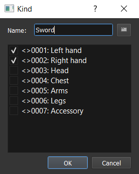
Create a weapon / armor kind and also choose on which equipment you can assign it.
Name: Name for this kind of weapon / armor.- Selection of equipment you can assign.
Battle maps
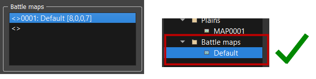
Battle maps are in fact maps associated with a specific position (representing the center point of the battle). Select a map (by default in the Battle Maps folder in the map selector) and a position to add a new battle map.
Statistics associations
Statistic associated to level: Choose one of your fix statistic to associate with level. Level is a statistic that is increasing for the character evolution: leveling up will increase other statistics.Statistic associated to exp: Choose one of your bar statistic to associate with experience. Experience is something earned generally after finishing a battle. Once experience goes to its maximum value, the character is leveling up and the map experience bar increases too.
Formulas
Is dead: Formula in JavaScript defining conditions to consider that a character is dead.ucorresponds to the character.Critical influence: Formula in JavaScript defining the new damages value after having a critical hit.damagecorresponds to the damages done without critical influence.
Battle musics
Battle: Battle music used during the battle.Level up: Sound used when a hero is leveling up.Victory: Music used during the victory end battle phase.
Currencies
Go to Systems Manager > System.
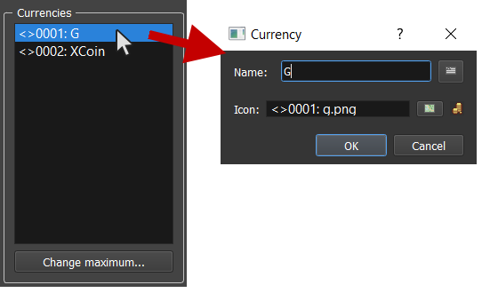
Currencies can be used in the game for trading with NPCs or any other way.
Name: Name of the currency.Icon: Icon associated with the currency.
Skills / Items / Weapons / Armors
Go to Datas Manager.
In Skills tab:
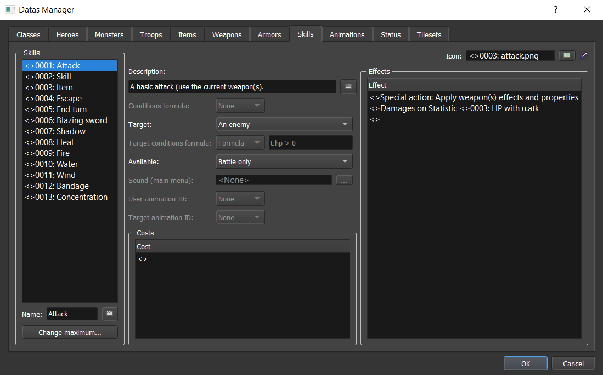
In Items tab:
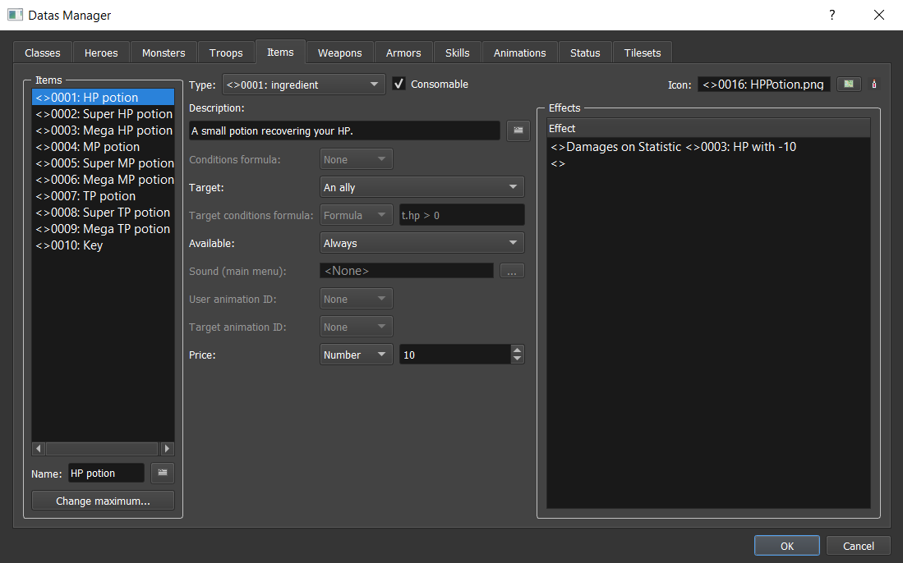
In Weapons tab:
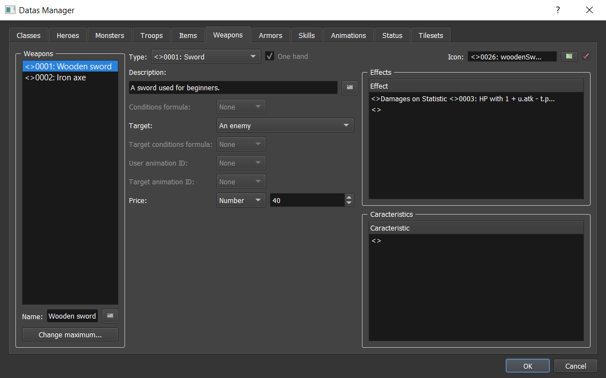
In Armors tab:
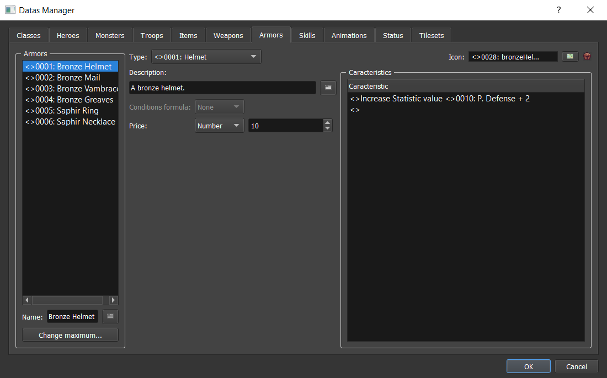
These four data have common properties:
Name: Name of the data.Type: Select the type of item / armor / weapon.Consumable: If checked, the data will disappear after using the data.One hand: Not available yet.Icon: Icon associated with the data.Description: Description of the data that will be displayed in game.Conditions formula: Not available yet.Target: Target for applying associated effects.None: No target selection.The user: Select the user only.An enemy: Only select one ennemy.An ally: Only select one ally.All enemies: Select all enemies.All allies: Select all allies.
Target conditions formula: Not available yet.Available: Available kind of the data.Battle only: The data can be used only in battle.Main menu only: The data can be used only in main menu.Always: The data can be used in battle and main menu.Never: The data can never be used.
Sound (main menu): The sound to play when using it in the main menu.User animation ID: Not available yet.Target animation ID: Not available yet.Price: Price of the data when it can be bought / sold in a shop menu.
There also are three more common properties that can be listed: Costs, Effects, and Caracteristics.
Costs
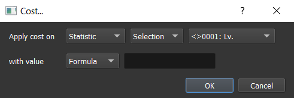
Choose the cost of using a skill. This is generally used for HP, MP, and TP statistic. A character will not be able to use a skill if he doesn't have enough for the use cost.
Apply cost on: Select which data will be influenced after using the skill. It can be astatistic, acurrency, or avariable.with value: Select the value required for the selected data.
Effects
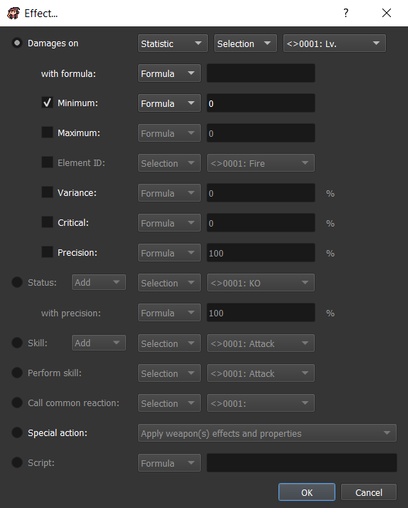
Choose the effects done for the target(s) data.
Damages on: Select which data will be damaged. It can be astatistic, acurrency, or avariable.with formula: Select the value damage for the selected data.Minimum: Minimum value that can have final damages.Maximum: Maximum value that can have final damagesElement ID: Not available yet.Variance: The variance damages in percent. This adds random on your damages. For example, if you choose 20% variance, your damages range would be : [damage - (20 * damage / 100) | damage + (20 * damage / 100)]. If not checked, there is no variance (= 0).Critical: The critical hit chance in percent. If not checked, there is no chance to do critical hit (= 0).Precision: The precision hit in percent. If not checked, you have 100% chance to hit.
Status Add / Remove: Not available yet.Skill Add / Remove: Not available yet.Perform skill: Not available yet.Call common reaction: Not available yet.Special action: Execute one of the following special actions:Apply weapon(s) effects and properties: This will use all the effects of the currently equipped weapon. If the is no weapon equipped, this will apply the next effects following this one.Open skills choice: Open the skills choice for battle command.Open items choice: Open the items choice for battle command.Escape: Escape from the battel.End turn: End the team turn.
Script: Not available yet.
Characteristics
Choose the characteristics added to the character when equipped.
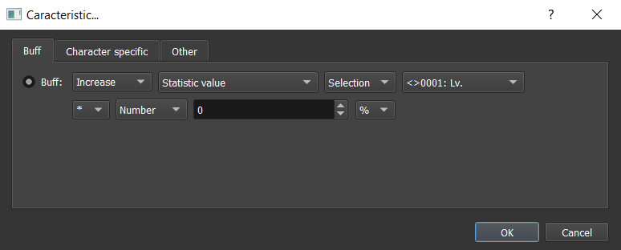
-
Buff increase / decrease: Select which data will be influenced. This can be:Statistic value: Select a statistic. If bar statistic, this will increase the max value.Element resistance: Not available yet.Status resistance: Not available yet.Experience gain: Not available yet.Currency gain: Not available yet.Skill cost: Not available yet.Variable: Not available yet.
After selecting the data influence, you can choose how this is influenced according to the base value:
* / +: Choose operation by multiplying by or adding a value.% / Fix: Choose unit value.
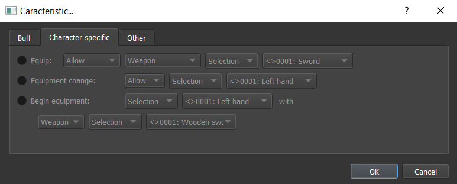
Not available yet.
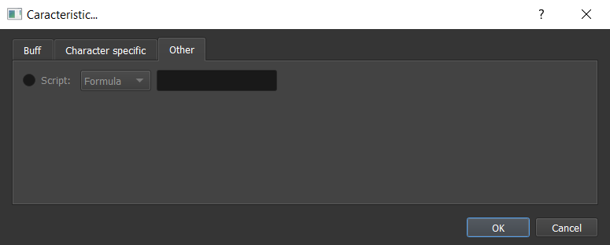
Not available yet.
Classes
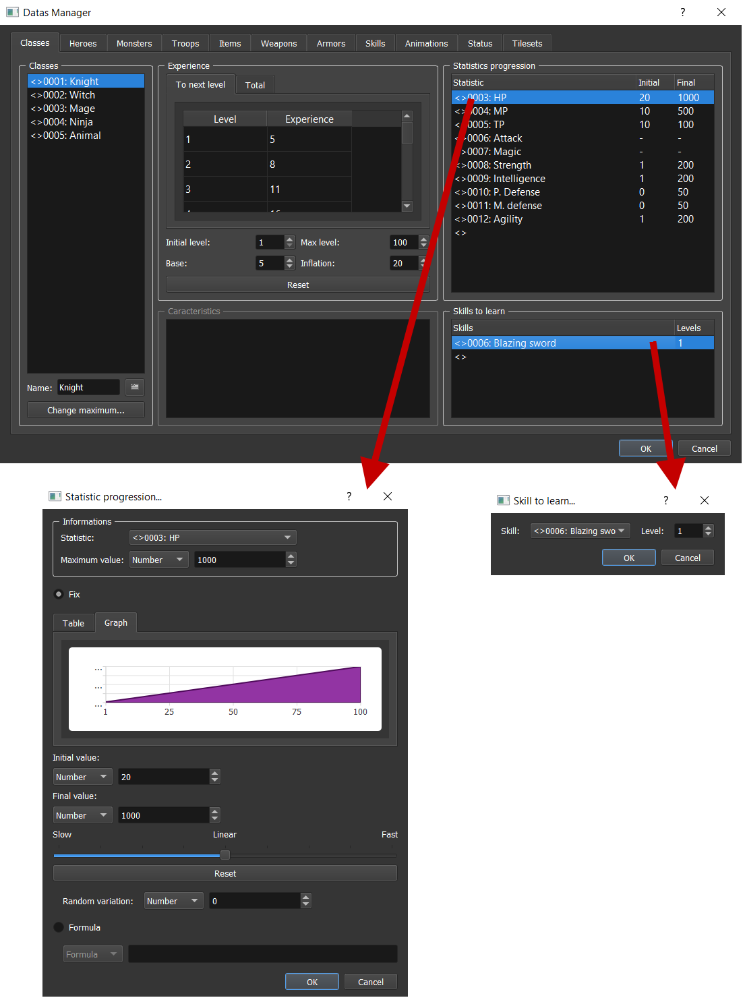
Each character has a class. The class defines a lot of attributes that a character can have.
- Experience: Define experience progression according to level. Note that you can edit the experience column manually by
double clickingon the cell.To next level: The table indicates the number of experience to gain for going to the next level.Total: The table indicates the total number of experience that should be accumulated for going to the next level.Initial level: The initial level possible.Max level: The maximum level possible.Base: The number of experience to have at initial level.Inflation: Inflation value changing experience progression according to base and level.Reset: Reset to default values.
- Statistics progression: Change the statistics progression for level ups.
- Informations:
Statistic: Select one of the system statistic.Maximum value: The maximum possible value. This doesn't always corresponds to the final value because items could add bonus values.
- Fix:
Initial value: The initial value at initial level.Final value: The final value at max level.Slider progression:Slow: The experience increases slowly at the begining and increase faster at te end.Linear: The experience increases constantly.Fast: The experience increases fast at the begining and increase slowly at te end.
Random variation: The variance applied on the progression function. Note that this will always lead to the max value.
- Formula: Use a formula to define the value.
ucorresponds to the character.
- Informations:
- Caracteristics: Not available yet.
- Skills to learn: Defines the list of skills that can be learned according to levels.
Skill: The corresponding skill to learn.Level: The level for learning this skill.
Heroes
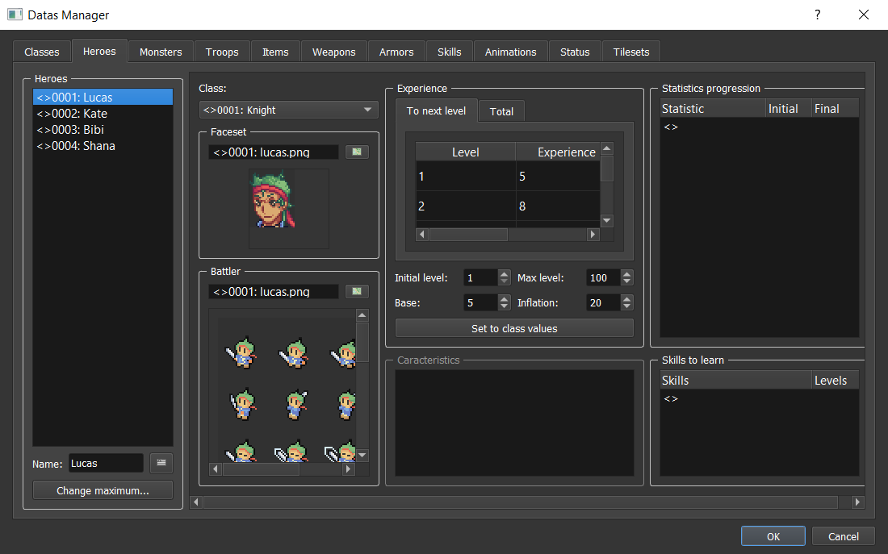
Class: Select an existing class.Faceset: Select a faceset for battles.Battler: Select a battler for battles.
All the other properties inherites from the class properties. For Experience, the values by default are the class values. The Set to class values button updates the values to the class values. For Statistics progression list, you can add additional progressions. If the statistic already existed, the progression would be replaced. For Skills to learn list, you can add additional skills to learn. If the skill already existed, the level would be replaced.
Monsters
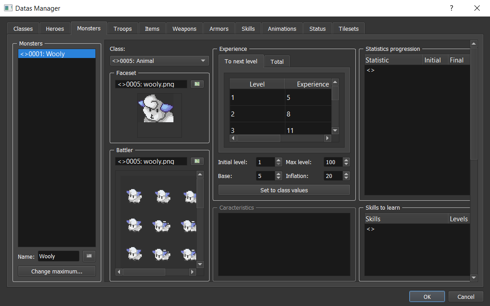
Monsters are exactly like heroes but with extra information for battles:
-
Rewards:
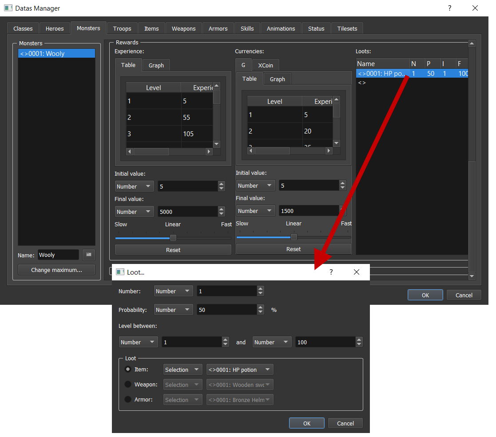
Experience: Choose experience progression that your team can get at the end of a battle.Currencies: Choose currencies progression that your team can get at the end of a battle.Loots: The loots that your team can get at the end of a battle.Number: The number of items to loot.Probability: The probability to loot.Level between: Choose range level of loot availability.Loot: SelectItem,Weapon, andArmor.
-
Actions:
Not available yet.
Troops
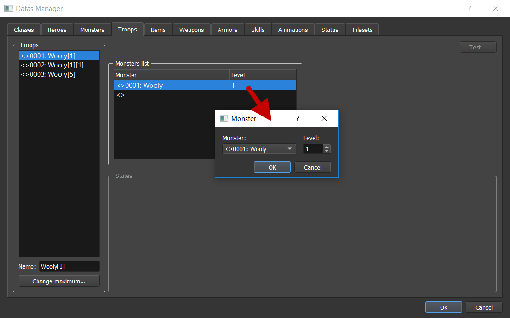
Troops correspond to a monsters group and some states with reactions.
- Monsters list:
Monster: The monster in the group.Level: The level of the monster.
- States: Not available yet.
Status
Not available yet.
Animations
Not available yet.